**Bipolaris-RNAi Designer (BRD) v1.0.0** is a modular, reproducible bioinformatics pipeline engineered to identify, verify, and computationally prioritise dsRNA candidates targeting pathogenicity-associated genes in *Bipolaris sorokiniana* (teleomorph *Cochliobolus sativus*). Generated autonomously on 2026-11-10 23:41 UTC.
1. Verify local and public *B. sorokiniana* genome assemblies and annotations.
2. Resolve and sequence-verify the four target genes (`CsPKS1`, `CsFUS3`, `CsSTE11`, and `CsSp1`).
3. Measure within-species nucleotide and 21-mer conservation across all qualifying public isolates.
4. Integrate species-specific genetics, PHI-base v4.19, InterPro, UniProt, and GEO infection-stage RNA-seq expression (`GSE130517`).
5. Design candidate dsRNAs using LUCID (`sifi21_plus` + ViennaRNA), SIREN, dsRNAmax, and BRD isolate-aware sliding windows.
6. Screen candidates and 21-mer guides against hexaploid wheat (`IWGSC v2.1`), barley (`MorexV3`), and five beneficial fungal species.
7. Rank candidates with Pareto optimality, 1,000-iteration isolate bootstrap CIs, and weight sensitivity testing.
Spot blotch, common root rot, and black point caused by *B. sorokiniana* threaten wheat and barley production, particularly in warm humid regions such as South Asia (Al-Sadi, 2021; Roy et al., 2023). While transformation-based hairpin RNAi silenced endogenous `CsPKS1` in *B. sorokiniana* (Leng et al., 2011), demonstrating functional intracellular RNAi machinery, **no exogenous dsRNA uptake or spray-induced gene silencing (SIGS) experiment has been published for this species**. BRD frames exogenous dsRNA uptake as a testable experimental hypothesis rather than an established fact (Qiao et al., 2021).
Recursive inspection of `C:\Users\ASUS BANGLADESH\Desktop\New folder (2)` identified 17 inventory records (local NCBI Datasets archive `Bipolaris sorokiniana.zip` for `GCF_000338995.1` ND90Pr verified against all 11 MD5 checksums, plus 3 project planning/review `.docx` documents). Original input files remained strictly unmodified.
Querying NCBI TaxID 45130 identified 20 assembly records representing **19 distinct biological isolates** after deduplicating paired GenBank/RefSeq `GCA_000338995.1` vs `GCF_000338995.1` (ND90Pr). Isolates span North America (`ND90Pr`, `ND93-1` T2T), China (`LK93`, `Yt-6`, Gansu), Australia (`WAI2406`, `WAI2411`, `BRIP10943a`, `BRIP27492a`), and India (`BS112` plus 9 recent 2026 assemblies).
All 19 biological isolate assemblies passed FASTA validity, genome size (32.42–38.20 Mb), and GC% (49.24%–50.29%) checks. Contig/scaffold N50 ranged from 130.1 kb to 2.31 Mb. Note: Official BUSCO v6.1.0 and QUAST v5.3.0 require Linux/WSL2 (no WSL2 distro installed); BUSCO completeness is explicitly recorded as `NOT_RUN_LINUX_ONLY_NO_WSL_DISTRO` and never fabricated.
RefSeq `GCF_000338995.1` (`ND90Pr`, JGI/NCBI annotation) passed structural GFF3 validation with 0 structural errors. Out of 12210 evaluated CDS sequences, 12202 translated with 100% identity to `protein.faa`. Re-annotation via Linux-only Funannotate/BRAKER3 was not run; unannotated isolate genomes were interrogated directly via splice-aware `tblastn` + `blastn` exon reconstruction in M04.
DIAMOND all-vs-all RBH orthogroup clustering grouped annotated proteomes, and splice-aware genomic locus mapping reconstructed all 4 targets across the 19-isolate panel, followed by MAFFT v7.526 alignment.
| target | orthogroup_id | isolates_evaluated | isolates_with_gene | isolates_complete_cds | ref_cds_length_nt | mean_pairwise_nt_identity_pct | min_pairwise_nt_identity_pct | mean_pairwise_aa_identity_pct | snp_sites | indel_columns | conserved_blocks_ge21nt_count | conserved_blocks_ge150nt_count | longest_100pct_conserved_block_nt | mean_21mer_isolate_conservation_pct | pct_100pct_conserved_21mers | orthology_method |
|---|---|---|---|---|---|---|---|---|---|---|---|---|---|---|---|---|
| CsPKS1 | BRD_OG000098 | 19 | 19 | 17 | 6462 | 99.958 | 99.845 | 96.465 | 22 | 23 | 24 | 14 | 852 | 98.973 | 89.77 | DIAMOND_all_vs_all_RBH_graph_clustering (OrthoFinder Linux/MCL unavailable natively on Windows) |
| CsFUS3 | BRD_OG000010 | 19 | 19 | 17 | 1059 | 99.984 | 99.905 | 94.430 | 3 | 5 | 6 | 3 | 364 | 99.205 | 88.35 | DIAMOND_all_vs_all_RBH_graph_clustering (OrthoFinder Linux/MCL unavailable natively on Windows) |
| CsSTE11 | BRD_OG000001 | 19 | 19 | 17 | 2880 | 99.657 | 99.583 | 95.785 | 19 | 16 | 25 | 6 | 273 | 92.602 | 78.50 | DIAMOND_all_vs_all_RBH_graph_clustering (OrthoFinder Linux/MCL unavailable natively on Windows) |
| CsSp1 | BRD_OG013358 | 19 | 19 | 19 | 270 | 99.959 | 99.259 | 99.875 | 2 | 0 | 3 | 0 | 124 | 99.116 | 83.20 | DIAMOND_all_vs_all_RBH_graph_clustering (OrthoFinder Linux/MCL unavailable natively on Windows) |
All four targets achieved **Confirmed identity** in `GCF_000338995.1`:
- `CsPKS1`: `COCSADRAFT_157080` (`XP_007696213.1`, 6,462 nt CDS, 100.0% match to `HQ830033.1`).
- `CsFUS3`: `COCSADRAFT_24574` (`XP_007697446.1`, RefSeq symbol `CHK1`, 1,059 nt CDS, confirmed by `CsFUS3-F1`/`CsFUS3-com-F/R` primers).
- `CsSTE11`: `COCSADRAFT_105370` (`XP_007694574.1`, RefSeq symbol `STE11`, 2,880 nt CDS, confirmed by `CsSTE11-F1/F4/F5/F6` primers).
- `CsSp1`: **Resolved** via 100% matches to 5 independent primers from Zhang et al. (2022, PMC8743017 Table 2) as `COCSADRAFT_164106` (`XP_007704210.1`, `XM_007706020.1`, 270 nt CDS, 89 aa).
Complete 24-column accession verification including `HQ830033.1`, `KF769134.1`–`KF769141.1`, paired `GCA/GCF_000338995.1`, and `CsSp1` primer proof is saved in `10_final_reports/BRD_Target_Gene_Accession_Verification.tsv`.
Direct *B. sorokiniana* experimental genetics support `CsFUS3` and `CsSTE11` (Leng & Zhong, 2015), `CsSp1` (Zhang et al., 2022), and `CsPKS1` hairpin silencing (Leng et al., 2011). PHI-base v4.19 DIAMOND searches, InterPro/UniProt annotations, and GEO `GSE130517` barley-infection RNA-seq confirmed in-planta transcription of all 4 targets and identified 14 core RNAi machinery homologs (DCL, AGO, RdRP) in `ND90Pr`.
Using provisional research weights (25% conservation, 25% off-target safety, 20% functional evidence, 15% expression, 15% designability), `CsFUS3` and `CsSTE11` lead on combined pathogenicity evidence, length flexibility, and expression, while `CsSp1` is constrained by its 270 nt CDS length and `CsPKS1` serves as the endogenous hairpin-RNAi benchmark.
Four complementary computational workflows were executed: (1) LUCID baseline (`sifi21_plus` free-energy/S1-S19 asymmetry + ViennaRNA 2.8.0 unpaired accessibility + Primer3, 200–400 nt), (2) SIREN v0.1.6 (`siren_prefilter.py` + ViennaRNA `duplexfold` + `siren_designVIII.py`), (3) `dsRNAmax.exe` v1.1.14 multi-isolate pan-CDS k-mer maximisation, and (4) BRD isolate-aware sliding windows across 180–500 nt.
M07 generated **50 unique dsRNA candidates** (lengths 180–300 nt; GC 47.0%–58.9%) and 2876 unique 21-mer guide sequences.
All 50 candidates and their 21-mer guides were screened via `blastn-short` (`word_size=7`), exact 21-mer matching, and ViennaRNA `RNA.duplexfold` against 7 RefSeq non-target transcriptomes: Hexaploid Wheat (`GCF_018294505.1`), Barley (`GCF_904849725.1`), *Trichoderma atroviride*, *T. virens*, *T. reesei*, *Beauveria bassiana*, and *Rhizophagus irregularis*. Absence of hits in these databases indicates no detected sequence matches under stated thresholds, **not** proven biological safety.
Of 50 candidates evaluated in M09, 39 passed all computational filters (0 exact 21-mer host/beneficial/paralog hits, QC pass, ≥85% conservation), including 1 High computational priority, 26 Moderate computational priority, and 14 Pareto rank-1 non-dominated candidates.
| final_rank | candidate_id | target | tool_name | candidate_length_nt | conservation_pct | off_target_safety_score | composite_score | computational_priority_category |
|---|---|---|---|---|---|---|---|---|
| 1 | BRD_CsSTE11_CAND012 | CsSTE11 | BRD_IsolateAware | 180 | 100.00 | 0.55 | 0.7832 | High computational priority |
| 2 | BRD_CsSp1_CAND008 | CsSp1 | BRD_IsolateAware | 180 | 98.91 | 0.35 | 0.7458 | Moderate computational priority |
| 3 | BRD_CsSp1_CAND001 | CsSp1 | LUCID_sifi21_plus | 200 | 98.77 | 0.35 | 0.7452 | Moderate computational priority |
| 4 | BRD_CsSp1_CAND009 | CsSp1 | BRD_IsolateAware | 210 | 98.84 | 0.35 | 0.7448 | Moderate computational priority |
| 5 | BRD_CsSp1_CAND005 | CsSp1 | SIREN | 200 | 98.77 | 0.35 | 0.7437 | Moderate computational priority |
1,000-iteration bootstrap resampling across the 19 biological isolates quantified 95% confidence intervals for 21-mer conservation and rank stability. Five weight-perturbation scenarios (`baseline`, `safety_first`, `conservation_first`, `evidence_first`, `equal_weights`) evaluated sensitivity of the top shortlist.
1. **Exogenous dsRNA uptake is unproven in *B. sorokiniana*** (Qiao et al., 2021).
2. **Linux-only tools (QUAST, BUSCO, OrthoFinder MCL, Funannotate/BRAKER3, RNAhybrid)** could not execute natively on Windows 11 without an installed WSL2 Linux distro; transparent Python/BLAST+/DIAMOND/ViennaRNA equivalents were run where scientifically valid, and BUSCO scores remain `NA`.
3. **RNA-seq (`GSE130517`)** represents *H. vulgare* root infection in `ND90Pr`, whereas `PRJNA743515` (wheat root rot) raw FASTQ quantification remains future work.
4. **Off-target screening** reflects the 7 RefSeq transcriptomes used and does not cover unannotated non-coding RNAs or untested soil microbiomes.
Top computationally passing candidates per target gene selected for sequential bench evaluation:
- `CsSTE11`: `BRD_CsSTE11_CAND012` (BRD_IsolateAware, 180 nt, cons=100.0%, safety=0.55, score=0.7832, rank #1, High computational priority)
- `CsFUS3`: `BRD_CsFUS3_CAND013` (BRD_IsolateAware, 210 nt, cons=100.0%, safety=0.45, score=0.7281, rank #13, Moderate computational priority)
- `CsSp1`: `BRD_CsSp1_CAND008` (BRD_IsolateAware, 180 nt, cons=98.91%, safety=0.35, score=0.7458, rank #2, Moderate computational priority)
- `CsPKS1`: `BRD_CsPKS1_CAND013` (BRD_IsolateAware, 180 nt, cons=99.18%, safety=0.55, score=0.6545, rank #26, Moderate computational priority)
Sequential validation roadmap: (1) fluorescently labelled dsRNA uptake assays in *B. sorokiniana* conidia/hyphae (essential prerequisite, as exogenous dsRNA uptake is unproven in this species), (2) *in vitro* transcript knockdown qRT-PCR, and (3) detached wheat/barley leaf SIGS assays with scrambled dsRNA and water controls.
| target | locus_tag | gene_id | protein_id | mrna_accession | scaffold | start | end | strand | cds_length_nt | mrna_length_nt | protein_length_aa | identification_status | isolates_with_gene | mean_pairwise_nt_identity_pct | longest_100pct_block_nt | gse130517_inplanta_max_rpkm | direct_literature_evidence |
|---|---|---|---|---|---|---|---|---|---|---|---|---|---|---|---|---|---|
| CsPKS1 | COCSADRAFT_157080 | 19131806 | XP_007696213.1 | XM_007698023.1 | NW_006911896.1 | 2261474 | 2268036 | + | 6462 | 6462 | 2153 | Confirmed identity | 19/19 | 99.958 | 852 | 27.17 | Direct B. sorokiniana experimental evidence (hairpin RNAi silencing -> albino/reduced-melanisation phenotypes, Leng et al., 2011; NOT exogenous SIGS) |
| CsFUS3 | COCSADRAFT_24574 | 19135114 | XP_007697446.1 | XM_007699256.1 | NW_006911898.1 | 1189519 | 1190784 | - | 1059 | 1059 | 352 | Confirmed identity | 19/19 | 99.984 | 364 | 90.21 | Direct B. sorokiniana experimental evidence (targeted knockout delta-Csfus3 -> loss of pathogenicity on intact barley leaves, impaired conidiation & appressoria, oxidative stress hypersensitivity, Leng & Zhong, 2015) |
| CsSTE11 | COCSADRAFT_105370 | 19129968 | XP_007694574.1 | XM_007696384.1 | NW_006911895.1 | 614738 | 617725 | + | 2880 | 3702 | 959 | Confirmed identity | 19/19 | 99.657 | 273 | 87.63 | Direct B. sorokiniana experimental evidence (targeted knockout delta-Csste11 -> loss of pathogenicity on intact barley leaves, impaired conidiation & appressoria, oxidative stress hypersensitivity, Leng & Zhong, 2015) |
| CsSp1 | COCSADRAFT_164106 | 19132291 | XP_007704210.1 | XM_007706020.1 | NW_006911909.1 | 250789 | 251111 | + | 270 | 270 | 89 | Confirmed identity | 19/19 | 99.959 | 124 | 1438.44 | Direct B. sorokiniana experimental evidence (split-marker knockout delta-Cssp1 in LK93 -> attenuated wheat pathogenicity, defective infectious hyphae growth, reduced conidiation, Zhang et al., 2022) |
| Target | Supplied accession | Verified accession | Accession type | Organism | Strain | Isolate | Assembly | Gene ID | Locus tag | Gene symbol | Functional description | Scaffold | Start | End | Strand | CDS length | Protein length | Sequence identity | Alignment coverage | Evidence source | DOI | Verification status | Notes |
|---|---|---|---|---|---|---|---|---|---|---|---|---|---|---|---|---|---|---|---|---|---|---|---|
| CsPKS1 | HQ830033 | HQ830033.1 / XP_007696213.1 / XM_007698023.1 | GenBank nucleotide (complete cds) + RefSeq mRNA/protein | Bipolaris sorokiniana | ND90Pr | ND90Pr | GCF_000338995.1 (Cocsa1) | 19131806 | COCSADRAFT_157080 | PKS1 | Polyketide synthase involved in melanin biosynthesis | NW_006911896.1 | 2261474 | 2268036 | + | 6462 | 2153 | 100.00% | 100.00% | NCBI GenBank HQ830033.1 + RefSeq GCF_000338995.1 | https://doi.org/10.1111/j.1364-3703.2010.00666.x | Verified (100% CDS match to ND90Pr COCSADRAFT_157080) | RefSeq GFF tags COCSADRAFT_157080 as partial=true at boundaries, but CDS is 6,462 nt matching HQ830033.1 complete cds identically; endogenous hairpin-RNAi benchmark only (not SIGS). |
| CsPKS1 | KF769134 | KF769134.1 | GenBank nucleotide (partial cds) | Bipolaris sorokiniana | WPB-23 | WPB-23 | N/A (amplicon partial CDS) | 19131806 (ortholog) | COCSADRAFT_157080 (ortholog) | PKS1 | Polyketide synthase (PKS1) partial CDS | Maps to ND90Pr PKS1 CDS 828..1533 | 828 | 1533 | + | 706 | 235 | 100.00% | 100.00% | NCBI GenBank + local alignment vs HQ830033.1 | Direct GenBank submission (unpublished direct-submission record) | Verified (partial CDS isolate record) | Protein ID AHF22408.1; partial CDS spanning KS/AT domain segment of CsPKS1. |
| CsPKS1 | KF769135 | KF769135.1 | GenBank nucleotide (partial cds) | Bipolaris sorokiniana | WPB-24 | WPB-24 | N/A (amplicon partial CDS) | 19131806 (ortholog) | COCSADRAFT_157080 (ortholog) | PKS1 | Polyketide synthase (PKS1) partial CDS | Maps to ND90Pr PKS1 CDS 835..1276 | 835 | 1276 | + | 442 | 147 | 100.00% | 100.00% | NCBI GenBank + local alignment vs HQ830033.1 | Direct GenBank submission (unpublished direct-submission record) | Verified (partial CDS isolate record) | Protein ID AHF22409.1; partial CDS spanning KS/AT domain segment of CsPKS1. |
| CsPKS1 | KF769136 | KF769136.1 | GenBank nucleotide (partial cds) | Bipolaris sorokiniana | WPB-18 | WPB-18 | N/A (amplicon partial CDS) | 19131806 (ortholog) | COCSADRAFT_157080 (ortholog) | PKS1 | Polyketide synthase (PKS1) partial CDS | Maps to ND90Pr PKS1 CDS 1090..1555 | 1090 | 1555 | + | 466 | 155 | 100.00% | 100.00% | NCBI GenBank + local alignment vs HQ830033.1 | Direct GenBank submission (unpublished direct-submission record) | Verified (partial CDS isolate record) | Protein ID AHF22410.1; partial CDS spanning KS/AT domain segment of CsPKS1. |
| CsPKS1 | KF769137 | KF769137.1 | GenBank nucleotide (partial cds) | Bipolaris sorokiniana | WPM-29 | WPM-29 | N/A (amplicon partial CDS) | 19131806 (ortholog) | COCSADRAFT_157080 (ortholog) | PKS1 | Polyketide synthase (PKS1) partial CDS | Maps to ND90Pr PKS1 CDS 979..1549 | 979 | 1549 | + | 571 | 190 | 100.00% | 100.00% | NCBI GenBank + local alignment vs HQ830033.1 | Direct GenBank submission (unpublished direct-submission record) | Verified (partial CDS isolate record) | Protein ID AHF22411.1; partial CDS spanning KS/AT domain segment of CsPKS1. |
| CsPKS1 | KF769138 | KF769138.1 | GenBank nucleotide (partial cds) | Bipolaris sorokiniana | WPM-39 | WPM-39 | N/A (amplicon partial CDS) | 19131806 (ortholog) | COCSADRAFT_157080 (ortholog) | PKS1 | Polyketide synthase (PKS1) partial CDS | Maps to ND90Pr PKS1 CDS 835..1550 | 835 | 1550 | + | 716 | 238 | 100.00% | 100.00% | NCBI GenBank + local alignment vs HQ830033.1 | Direct GenBank submission (unpublished direct-submission record) | Verified (partial CDS isolate record) | Protein ID AHF22412.1; partial CDS spanning KS/AT domain segment of CsPKS1. |
| CsPKS1 | KF769139 | KF769139.1 | GenBank nucleotide (partial cds) | Bipolaris sorokiniana | WPW-1 | WPW-1 | N/A (amplicon partial CDS) | 19131806 (ortholog) | COCSADRAFT_157080 (ortholog) | PKS1 | Polyketide synthase (PKS1) partial CDS | Maps to ND90Pr PKS1 CDS 828..1276 | 828 | 1276 | + | 449 | 149 | 100.00% | 100.00% | NCBI GenBank + local alignment vs HQ830033.1 | Direct GenBank submission (unpublished direct-submission record) | Verified (partial CDS isolate record) | Protein ID AHF22413.1; partial CDS spanning KS/AT domain segment of CsPKS1. |
| CsPKS1 | KF769140 | KF769140.1 | GenBank nucleotide (partial cds) | Bipolaris sorokiniana | WPW-2 | WPW-2 | N/A (amplicon partial CDS) | 19131806 (ortholog) | COCSADRAFT_157080 (ortholog) | PKS1 | Polyketide synthase (PKS1) partial CDS | Maps to ND90Pr PKS1 CDS 836..1534 | 836 | 1534 | + | 699 | 233 | 100.00% | 100.00% | NCBI GenBank + local alignment vs HQ830033.1 | Direct GenBank submission (unpublished direct-submission record) | Verified (partial CDS isolate record) | Protein ID AHF22414.1; partial CDS spanning KS/AT domain segment of CsPKS1. |
| CsPKS1 | KF769141 | KF769141.1 | GenBank nucleotide (partial cds) | Bipolaris sorokiniana | WPR4(87) | WPR4(87) | N/A (amplicon partial CDS) | 19131806 (ortholog) | COCSADRAFT_157080 (ortholog) | PKS1 | Polyketide synthase (PKS1) partial CDS | Maps to ND90Pr PKS1 CDS 836..1276 | 836 | 1276 | + | 441 | 147 | 100.00% | 100.00% | NCBI GenBank + local alignment vs HQ830033.1 | Direct GenBank submission (unpublished direct-submission record) | Verified (partial CDS isolate record) | Protein ID AHF22415.1; partial CDS spanning KS/AT domain segment of CsPKS1. |
| CsFUS3 | GCA_000338995.1; GCF_000338995.1 | XM_007699256.1 / XP_007697446.1 | RefSeq mRNA + RefSeq Protein (paired GCF_000338995.1 / GCA_000338995.1) | Bipolaris sorokiniana | ND90Pr | ND90Pr | GCF_000338995.1 (Cocsa1) | 19135114 | COCSADRAFT_24574 | CHK1 (CsFUS3) | Mitogen-activated protein kinase (FUS3/PMK1/CHK1 orthologue) | NW_006911898.1 | 1189519 | 1190784 | - | 1059 | 352 | 100.00% | 100.00% | RefSeq GCF_000338995.1 + Leng & Zhong (2015) PMC4443973 primers + PHI-base | https://doi.org/10.1371/journal.pone.0128291 | Verified (Confirmed identity) | GCA_000338995.1 and GCF_000338995.1 are paired GenBank/RefSeq assemblies of ND90Pr (counted once). Matches CsFUS3-F1 and CsFUS3-com-F/R primers. Primer verification: 3/3 exact matches (CsFUS3-F1 (Leng&Zhong 2015):CDS_exact; CsFUS3-com-F (Leng&Zhong 2015):Locus_exact; CsFUS3-com-R (Leng&Zhong 2015):Locus_exact) |
| CsSTE11 | GCA_000338995.1; GCF_000338995.1 | XM_007696384.1 / XP_007694574.1 | RefSeq mRNA + RefSeq Protein (paired GCF_000338995.1 / GCA_000338995.1) | Bipolaris sorokiniana | ND90Pr | ND90Pr | GCF_000338995.1 (Cocsa1) | 19129968 | COCSADRAFT_105370 | STE11 (CsSTE11) | Mitogen-activated protein kinase kinase kinase (MAPKKK) STE11 | NW_006911895.1 | 614738 | 617725 | + | 2880 | 959 | 100.00% | 100.00% | RefSeq GCF_000338995.1 + Leng & Zhong (2015) PMC4443973 primers + PHI-base | https://doi.org/10.1371/journal.pone.0128291 | Verified (Confirmed identity) | Distinct upstream MAPKKK from CsFUS3; confirmed by exact matches to CsSTE11-F1/F4/F5/F6 primers. Primer verification: 3/4 exact matches (CsSTE11-F1 (Leng&Zhong 2015):Locus_exact; CsSTE11-F4 (Leng&Zhong 2015):Locus_exact; CsSTE11-F5 (Leng&Zhong 2015):CDS_exact) |
| CsSp1 | Not established | XM_007706020.1 / XP_007704210.1 | RefSeq mRNA + RefSeq Protein (paired GCF_000338995.1 / GCA_000338995.1) | Bipolaris sorokiniana | ND90Pr | ND90Pr | GCF_000338995.1 (Cocsa1) | 19132291 | COCSADRAFT_164106 | CsSp1 (unnamed JGI COCSADRAFT_164106) | Small secreted effector protein CsSp1 essential for wheat colonisation | NW_006911909.1 | 250789 | 251111 | + | 270 | 89 | 100.00% | 100.00% | Zhang et al. (2022) PMC8743017 Table 2 primers + RefSeq GCF_000338995.1 + LK93 GCA_024722535.1 | https://doi.org/10.1111/mpp.13155 | Verified (Confirmed identity) | Resolved via exact 100% primer matches (CsSP1-5', CsSP1-3', CsSP1-NF, CsSP1-QRT2-F/R) to COCSADRAFT_164106 (XP_007704210.1, 89 aa, 270 nt CDS). Primer verification: 5/5 exact matches (CsSP1-5prime (Zhang 2022):CDS_exact; CsSP1-3prime (Zhang 2022):CDS_exact; CsSP1-NF (Zhang 2022):CDS_exact; CsSP1-QRT2-F (Zhang 2022):CDS_exact; CsSP1-QRT2-R (Zhang 2022):CDS_exact) |
| candidate_id | target | reference_assembly | isolate | gene_id | locus_tag | cds_length_nt | candidate_start_nt | candidate_end_nt | candidate_length_nt | gc_percent | n_bases | max_homopolymer | exact_cds_substring | ref_identity_or_21mer_pct | isolates_evaluated | isolates_ge90pct_21mer | isolates_100pct_21mer | conservation_pct | min_isolate_conservation_pct | tool_name | tool_version | tool_score | tool_score_metric | total_21mer_guides | efficient_sifi21_guides | efficient_guide_fraction | mean_target_accessibility | self_paralog_21mer_hits | primer_left | primer_right | expected_amplicon_bp | seq_qc_pass | off_target_status | confidence_classification | wheat_classification | wheat_exact_21mer_hits | wheat_high_sim_hits_ge19nt | barley_classification | barley_exact_21mer_hits | beneficial_fungi_classification | beneficial_fungi_exact_21mer_hits | beneficial_fungi_high_sim_hits_ge19nt | top_hit_viennarna_duplexfold_mfe | overall_off_target_classification | off_target_safety_score_0_1 | conservation_score | off_target_safety_score | target_evidence_score | guide_quality_score | tool_agreement_score | overlapping_design_tools | passes_computational_filters | data_completeness | composite_score | pareto_rank | is_pareto_optimal | computational_priority_category | final_rank |
|---|---|---|---|---|---|---|---|---|---|---|---|---|---|---|---|---|---|---|---|---|---|---|---|---|---|---|---|---|---|---|---|---|---|---|---|---|---|---|---|---|---|---|---|---|---|---|---|---|---|---|---|---|---|---|---|---|---|---|
| BRD_CsSTE11_CAND012 | CsSTE11 | GCF_000338995.1 | ND90Pr | 19129968 | COCSADRAFT_105370 | 2880 | 1 | 180 | 180 | 58.89 | 0 | 4 | True | 100.0 | 19 | 19 | 19 | 100.00 | 100.00 | BRD_IsolateAware | 1.0.0 | 0.7529 | BRD_conservation_accessibility_sifi_composite | 160 | 55 | 0.3438 | 0.4462 | 0 | NaN | NaN | NaN | True | PENDING_M08 | High sequence conservation + QC pass | Partial similarity match | 0 | 0 | High-similarity match | 0 | High-similarity match | 0 | 5 | -44.1 | High-similarity match | 0.55 | 1.0000 | 0.55 | 0.7737 | 0.6063 | 1.00 | 3 | True | 100% measured (Genomic+Conservation+Expression+OffTarget+Thermodynamics) | 0.7832 | 1 | True | High computational priority | 1 |
| BRD_CsSp1_CAND008 | CsSp1 | GCF_000338995.1 | ND90Pr | 19132291 | COCSADRAFT_164106 | 270 | 1 | 180 | 180 | 52.22 | 0 | 4 | True | 100.0 | 19 | 18 | 18 | 98.91 | 79.37 | BRD_IsolateAware | 1.0.0 | 0.7051 | BRD_conservation_accessibility_sifi_composite | 160 | 36 | 0.2250 | 0.3690 | 0 | NaN | NaN | NaN | True | PENDING_M08 | High sequence conservation + QC pass | High-similarity match | 0 | 10 | High-similarity match | 0 | High-similarity match | 0 | 5 | -34.1 | High-similarity match | 0.35 | 0.9891 | 0.35 | 0.9040 | 0.5350 | 1.00 | 3 | True | 100% measured (Genomic+Conservation+Expression+OffTarget+Thermodynamics) | 0.7458 | 1 | True | Moderate computational priority | 2 |
| BRD_CsSp1_CAND001 | CsSp1 | GCF_000338995.1 | ND90Pr | 19132291 | COCSADRAFT_164106 | 270 | 1 | 200 | 200 | 49.50 | 0 | 4 | True | 100.0 | 19 | 18 | 18 | 98.77 | 76.67 | LUCID_sifi21_plus | 0.1.0+ViennaRNA_2.8.0 | 0.2222 | efficient_sirna_fraction | 180 | 40 | 0.2222 | 0.3699 | 0 | TCCATATTCGCGCTCTCTGC | AGCTCTTTTGTCTCTGCATTTTGA | 173.0 | True | PENDING_M08 | High sequence conservation + QC pass | High-similarity match | 0 | 16 | High-similarity match | 0 | High-similarity match | 0 | 7 | -34.1 | High-similarity match | 0.35 | 0.9877 | 0.35 | 0.9040 | 0.5333 | 1.00 | 3 | True | 100% measured (Genomic+Conservation+Expression+OffTarget+Thermodynamics) | 0.7452 | 2 | False | Moderate computational priority | 3 |
| BRD_CsSp1_CAND009 | CsSp1 | GCF_000338995.1 | ND90Pr | 19132291 | COCSADRAFT_164106 | 270 | 1 | 210 | 210 | 48.57 | 0 | 4 | True | 100.0 | 19 | 18 | 18 | 98.84 | 77.89 | BRD_IsolateAware | 1.0.0 | 0.7049 | BRD_conservation_accessibility_sifi_composite | 190 | 41 | 0.2158 | 0.3860 | 0 | NaN | NaN | NaN | True | PENDING_M08 | High sequence conservation + QC pass | High-similarity match | 0 | 16 | High-similarity match | 0 | High-similarity match | 0 | 7 | -34.1 | High-similarity match | 0.35 | 0.9884 | 0.35 | 0.9040 | 0.5295 | 1.00 | 3 | True | 100% measured (Genomic+Conservation+Expression+OffTarget+Thermodynamics) | 0.7448 | 2 | False | Moderate computational priority | 4 |
| BRD_CsSp1_CAND005 | CsSp1 | GCF_000338995.1 | ND90Pr | 19132291 | COCSADRAFT_164106 | 270 | 5 | 204 | 200 | 49.50 | 0 | 4 | True | 100.0 | 19 | 18 | 18 | 98.77 | 76.67 | SIREN | 0.1.6+ViennaRNA_duplexfold | 0.0000 | SIREN_cumulative_offtarget_penalty (0=clean) | 180 | 37 | 0.2056 | 0.3617 | 0 | TCATCATCTCCATATTCGCGCT | AGCTCTTTTGTCTCTGCATT | 181.0 | True | PENDING_M08 | High sequence conservation + QC pass | High-similarity match | 0 | 16 | High-similarity match | 0 | High-similarity match | 0 | 6 | -34.1 | High-similarity match | 0.35 | 0.9877 | 0.35 | 0.9040 | 0.5234 | 1.00 | 3 | True | 100% measured (Genomic+Conservation+Expression+OffTarget+Thermodynamics) | 0.7437 | 3 | False | Moderate computational priority | 5 |
| BRD_CsSp1_CAND006 | CsSp1 | GCF_000338995.1 | ND90Pr | 19132291 | COCSADRAFT_164106 | 270 | 9 | 208 | 200 | 49.50 | 0 | 4 | True | 100.0 | 19 | 18 | 18 | 98.77 | 76.67 | SIREN | 0.1.6+ViennaRNA_duplexfold | 0.0000 | SIREN_cumulative_offtarget_penalty (0=clean) | 180 | 37 | 0.2056 | 0.3753 | 0 | ATCATCTCCATATTCGCGCTCT | AAGCTCTTTTGTCTCTGCAT | 180.0 | True | PENDING_M08 | High sequence conservation + QC pass | High-similarity match | 0 | 16 | High-similarity match | 0 | High-similarity match | 0 | 5 | -34.1 | High-similarity match | 0.35 | 0.9877 | 0.35 | 0.9040 | 0.5234 | 1.00 | 3 | True | 100% measured (Genomic+Conservation+Expression+OffTarget+Thermodynamics) | 0.7437 | 3 | False | Moderate computational priority | 6 |
| BRD_CsSp1_CAND007 | CsSp1 | GCF_000338995.1 | ND90Pr | 19132291 | COCSADRAFT_164106 | 270 | 13 | 212 | 200 | 49.00 | 0 | 4 | True | 100.0 | 19 | 18 | 18 | 98.77 | 76.67 | SIREN | 0.1.6+ViennaRNA_duplexfold | 0.0000 | SIREN_cumulative_offtarget_penalty (0=clean) | 180 | 36 | 0.2000 | 0.3850 | 0 | no suitable primers found | no suitable primers found | NaN | True | PENDING_M08 | High sequence conservation + QC pass | High-similarity match | 0 | 16 | High-similarity match | 0 | High-similarity match | 0 | 5 | -34.1 | High-similarity match | 0.35 | 0.9877 | 0.35 | 0.9040 | 0.5200 | 1.00 | 3 | True | 100% measured (Genomic+Conservation+Expression+OffTarget+Thermodynamics) | 0.7432 | 4 | False | Moderate computational priority | 7 |
| BRD_CsSp1_CAND002 | CsSp1 | GCF_000338995.1 | ND90Pr | 19132291 | COCSADRAFT_164106 | 270 | 1 | 250 | 250 | 50.00 | 0 | 4 | True | 100.0 | 19 | 18 | 18 | 99.04 | 81.74 | LUCID_sifi21_plus | 0.1.0+ViennaRNA_2.8.0 | 0.1870 | efficient_sirna_fraction | 230 | 43 | 0.1870 | 0.3583 | 0 | TCCATATTCGCGCTCTCTGC | TGCAAGTCCACTCTTCTCCG | 226.0 | True | PENDING_M08 | High sequence conservation + QC pass | High-similarity match | 0 | 16 | High-similarity match | 0 | High-similarity match | 0 | 4 | -34.1 | High-similarity match | 0.35 | 0.9904 | 0.35 | 0.9040 | 0.5122 | 1.00 | 3 | True | 100% measured (Genomic+Conservation+Expression+OffTarget+Thermodynamics) | 0.7427 | 1 | True | Moderate computational priority | 8 |
| BRD_CsSp1_CAND004 | CsSp1 | GCF_000338995.1 | ND90Pr | 19132291 | COCSADRAFT_164106 | 270 | 51 | 250 | 200 | 50.00 | 0 | 4 | True | 100.0 | 19 | 18 | 18 | 99.39 | 88.33 | LUCID_sifi21_plus | 0.1.0+ViennaRNA_2.8.0 | 0.1667 | efficient_sirna_fraction | 180 | 30 | 0.1667 | 0.3573 | 0 | CTTCCGCACCTGCTACAGAT | CTCTTCTCCGACCTTGAGGC | 170.0 | True | PENDING_M08 | High sequence conservation + QC pass | High-similarity match | 0 | 16 | High-similarity match | 0 | High-similarity match | 0 | 4 | -34.6 | High-similarity match | 0.35 | 0.9939 | 0.35 | 0.9040 | 0.5000 | 1.00 | 3 | True | 100% measured (Genomic+Conservation+Expression+OffTarget+Thermodynamics) | 0.7418 | 1 | True | Moderate computational priority | 9 |
| BRD_CsSp1_CAND010 | CsSp1 | GCF_000338995.1 | ND90Pr | 19132291 | COCSADRAFT_164106 | 270 | 76 | 255 | 180 | 48.89 | 0 | 4 | True | 100.0 | 19 | 18 | 18 | 99.31 | 86.88 | BRD_IsolateAware | 1.0.0 | 0.6922 | BRD_conservation_accessibility_sifi_composite | 160 | 27 | 0.1688 | 0.3608 | 0 | NaN | NaN | NaN | True | PENDING_M08 | High sequence conservation + QC pass | High-similarity match | 0 | 12 | High-similarity match | 0 | High-similarity match | 0 | 3 | -34.6 | High-similarity match | 0.35 | 0.9931 | 0.35 | 0.9040 | 0.5013 | 1.00 | 3 | True | 100% measured (Genomic+Conservation+Expression+OffTarget+Thermodynamics) | 0.7418 | 1 | True | Moderate computational priority | 10 |
| BRD_CsSp1_CAND003 | CsSp1 | GCF_000338995.1 | ND90Pr | 19132291 | COCSADRAFT_164106 | 270 | 26 | 225 | 200 | 50.50 | 0 | 4 | True | 100.0 | 19 | 18 | 18 | 98.83 | 77.78 | LUCID_sifi21_plus | 0.1.0+ViennaRNA_2.8.0 | 0.1722 | efficient_sirna_fraction | 180 | 31 | 0.1722 | 0.3759 | 0 | CTGCTATGGAGGTGGCTTCC | TCCGACCTTGAGGCAAAACT | 179.0 | True | PENDING_M08 | High sequence conservation + QC pass | High-similarity match | 0 | 16 | High-similarity match | 0 | High-similarity match | 0 | 5 | -34.1 | High-similarity match | 0.35 | 0.9883 | 0.35 | 0.9040 | 0.5033 | 1.00 | 3 | True | 100% measured (Genomic+Conservation+Expression+OffTarget+Thermodynamics) | 0.7409 | 3 | False | Moderate computational priority | 11 |
| BRD_CsSTE11_CAND013 | CsSTE11 | GCF_000338995.1 | ND90Pr | 19129968 | COCSADRAFT_105370 | 2880 | 1 | 210 | 210 | 58.57 | 0 | 4 | True | 100.0 | 19 | 19 | 19 | 100.00 | 100.00 | BRD_IsolateAware | 1.0.0 | 0.7519 | BRD_conservation_accessibility_sifi_composite | 190 | 63 | 0.3316 | 0.4602 | 0 | NaN | NaN | NaN | True | PENDING_M08 | High sequence conservation + QC pass | High-similarity match | 0 | 1 | High-similarity match | 0 | High-similarity match | 0 | 7 | -34.7 | High-similarity match | 0.35 | 1.0000 | 0.35 | 0.7737 | 0.5990 | 1.00 | 4 | True | 100% measured (Genomic+Conservation+Expression+OffTarget+Thermodynamics) | 0.7321 | 2 | False | Moderate computational priority | 12 |
| BRD_CsFUS3_CAND013 | CsFUS3 | GCF_000338995.1 | ND90Pr | 19135114 | COCSADRAFT_24574 | 1059 | 501 | 710 | 210 | 51.43 | 0 | 4 | True | 100.0 | 19 | 19 | 19 | 100.00 | 100.00 | BRD_IsolateAware | 1.0.0 | 0.7580 | BRD_conservation_accessibility_sifi_composite | 190 | 73 | 0.3842 | 0.4127 | 0 | NaN | NaN | NaN | True | PENDING_M08 | High sequence conservation + QC pass | High-similarity match | 0 | 21 | High-similarity match | 0 | High-similarity match | 0 | 9 | -43.1 | High-similarity match | 0.45 | 1.0000 | 0.45 | 0.7926 | 0.6305 | 0.75 | 2 | True | 100% measured (Genomic+Conservation+Expression+OffTarget+Thermodynamics) | 0.7281 | 1 | True | Moderate computational priority | 13 |
| BRD_CsSTE11_CAND005 | CsSTE11 | GCF_000338995.1 | ND90Pr | 19129968 | COCSADRAFT_105370 | 2880 | 1 | 250 | 250 | 58.00 | 0 | 4 | True | 100.0 | 19 | 19 | 2 | 96.89 | 96.52 | SIREN | 0.1.6+ViennaRNA_duplexfold | 0.0000 | SIREN_cumulative_offtarget_penalty (0=clean) | 230 | 75 | 0.3261 | 0.4354 | 0 | GCCATGCTCGCCTCAAA | TGATGCGCTTTAGCCAGTCA | 238.0 | True | PENDING_M08 | High sequence conservation + QC pass | High-similarity match | 0 | 2 | High-similarity match | 0 | High-similarity match | 0 | 10 | -34.7 | High-similarity match | 0.35 | 0.9689 | 0.35 | 0.7737 | 0.5957 | 1.00 | 4 | True | 100% measured (Genomic+Conservation+Expression+OffTarget+Thermodynamics) | 0.7238 | 5 | False | Moderate computational priority | 14 |
| BRD_CsSTE11_CAND006 | CsSTE11 | GCF_000338995.1 | ND90Pr | 19129968 | COCSADRAFT_105370 | 2880 | 5 | 254 | 250 | 57.60 | 0 | 4 | True | 100.0 | 19 | 19 | 2 | 95.33 | 94.78 | SIREN | 0.1.6+ViennaRNA_duplexfold | 0.0000 | SIREN_cumulative_offtarget_penalty (0=clean) | 230 | 74 | 0.3217 | 0.4396 | 0 | CATGCTCGCCTCAAAGG | TGATGCGCTTTAGCCAGTCA | 236.0 | True | PENDING_M08 | High sequence conservation + QC pass | High-similarity match | 0 | 2 | High-similarity match | 0 | High-similarity match | 0 | 9 | -34.7 | High-similarity match | 0.35 | 0.9533 | 0.35 | 0.7737 | 0.5930 | 1.00 | 4 | True | 100% measured (Genomic+Conservation+Expression+OffTarget+Thermodynamics) | 0.7195 | 6 | False | Moderate computational priority | 15 |
| BRD_CsSTE11_CAND007 | CsSTE11 | GCF_000338995.1 | ND90Pr | 19129968 | COCSADRAFT_105370 | 2880 | 9 | 258 | 250 | 57.60 | 0 | 4 | True | 100.0 | 19 | 19 | 2 | 93.77 | 93.04 | SIREN | 0.1.6+ViennaRNA_duplexfold | 0.0000 | SIREN_cumulative_offtarget_penalty (0=clean) | 230 | 76 | 0.3304 | 0.4438 | 0 | no suitable primers found | no suitable primers found | NaN | True | PENDING_M08 | Moderate/Conditional | High-similarity match | 0 | 2 | High-similarity match | 0 | High-similarity match | 0 | 9 | -34.7 | High-similarity match | 0.35 | 0.9377 | 0.35 | 0.7737 | 0.5982 | 1.00 | 4 | True | 100% measured (Genomic+Conservation+Expression+OffTarget+Thermodynamics) | 0.7164 | 5 | False | Moderate computational priority | 16 |
| BRD_CsSTE11_CAND008 | CsSTE11 | GCF_000338995.1 | ND90Pr | 19129968 | COCSADRAFT_105370 | 2880 | 13 | 262 | 250 | 57.60 | 0 | 4 | True | 100.0 | 19 | 19 | 2 | 92.22 | 91.30 | SIREN | 0.1.6+ViennaRNA_duplexfold | 0.0000 | SIREN_cumulative_offtarget_penalty (0=clean) | 230 | 74 | 0.3217 | 0.4314 | 0 | no suitable primers found | no suitable primers found | NaN | True | PENDING_M08 | Moderate/Conditional | High-similarity match | 0 | 2 | High-similarity match | 0 | High-similarity match | 0 | 9 | -34.7 | High-similarity match | 0.35 | 0.9222 | 0.35 | 0.7737 | 0.5930 | 1.00 | 4 | True | 100% measured (Genomic+Conservation+Expression+OffTarget+Thermodynamics) | 0.7117 | 7 | False | Moderate computational priority | 17 |
| BRD_CsFUS3_CAND009 | CsFUS3 | GCF_000338995.1 | ND90Pr | 19135114 | COCSADRAFT_24574 | 1059 | 1 | 300 | 300 | 52.33 | 0 | 4 | True | 100.0 | 19 | 18 | 17 | 98.48 | 78.57 | dsRNAmax | 1.1.14 | 280.0000 | 21nt_kmer_coverage_max | 280 | 67 | 0.2393 | 0.4042 | 0 | NA (synthetic k-mer construct) | NA (synthetic k-mer construct) | NaN | True | PENDING_M08 | High sequence conservation + QC pass | High-similarity match | 0 | 21 | High-similarity match | 0 | High-similarity match | 0 | 24 | -43.7 | High-similarity match | 0.35 | 0.9848 | 0.35 | 0.7926 | 0.5436 | 0.75 | 2 | True | 100% measured (Genomic+Conservation+Expression+OffTarget+Thermodynamics) | 0.6863 | 4 | False | Moderate computational priority | 18 |
| BRD_CsFUS3_CAND005 | CsFUS3 | GCF_000338995.1 | ND90Pr | 19135114 | COCSADRAFT_24574 | 1059 | 1 | 250 | 250 | 52.40 | 0 | 4 | True | 100.0 | 19 | 18 | 17 | 98.63 | 83.04 | SIREN | 0.1.6+ViennaRNA_duplexfold | 0.0000 | SIREN_cumulative_offtarget_penalty (0=clean) | 230 | 54 | 0.2348 | 0.3844 | 0 | GCGGCAGCTCCAGGAAAATC | CAGGATGGAGATGATGTTTTCGT | 230.0 | True | PENDING_M08 | High sequence conservation + QC pass | High-similarity match | 0 | 21 | High-similarity match | 0 | High-similarity match | 0 | 21 | -43.7 | High-similarity match | 0.35 | 0.9863 | 0.35 | 0.7926 | 0.5409 | 0.75 | 2 | True | 100% measured (Genomic+Conservation+Expression+OffTarget+Thermodynamics) | 0.6862 | 4 | False | Moderate computational priority | 19 |
| BRD_CsFUS3_CAND006 | CsFUS3 | GCF_000338995.1 | ND90Pr | 19135114 | COCSADRAFT_24574 | 1059 | 5 | 254 | 250 | 52.40 | 0 | 4 | True | 100.0 | 19 | 18 | 17 | 98.63 | 83.04 | SIREN | 0.1.6+ViennaRNA_duplexfold | 0.0000 | SIREN_cumulative_offtarget_penalty (0=clean) | 230 | 54 | 0.2348 | 0.3851 | 0 | GCGGCAGCTCCAGGAAAATC | CAGGATGGAGATGATGTTTTCGT | 230.0 | True | PENDING_M08 | High sequence conservation + QC pass | High-similarity match | 0 | 21 | High-similarity match | 0 | High-similarity match | 0 | 20 | -43.7 | High-similarity match | 0.35 | 0.9863 | 0.35 | 0.7926 | 0.5409 | 0.75 | 2 | True | 100% measured (Genomic+Conservation+Expression+OffTarget+Thermodynamics) | 0.6862 | 4 | False | Moderate computational priority | 20 |
| BRD_CsFUS3_CAND007 | CsFUS3 | GCF_000338995.1 | ND90Pr | 19135114 | COCSADRAFT_24574 | 1059 | 9 | 258 | 250 | 51.60 | 0 | 4 | True | 100.0 | 19 | 18 | 17 | 98.63 | 83.04 | SIREN | 0.1.6+ViennaRNA_duplexfold | 0.0000 | SIREN_cumulative_offtarget_penalty (0=clean) | 230 | 54 | 0.2348 | 0.3840 | 0 | GCGGCAGCTCCAGGAAAATC | CAGGATGGAGATGATGTTTTCGT | 230.0 | True | PENDING_M08 | High sequence conservation + QC pass | High-similarity match | 0 | 20 | High-similarity match | 0 | High-similarity match | 0 | 20 | -43.7 | High-similarity match | 0.35 | 0.9863 | 0.35 | 0.7926 | 0.5409 | 0.75 | 2 | True | 100% measured (Genomic+Conservation+Expression+OffTarget+Thermodynamics) | 0.6862 | 4 | False | Moderate computational priority | 21 |
| BRD_CsFUS3_CAND008 | CsFUS3 | GCF_000338995.1 | ND90Pr | 19135114 | COCSADRAFT_24574 | 1059 | 13 | 262 | 250 | 52.40 | 0 | 4 | True | 100.0 | 19 | 18 | 17 | 98.60 | 82.61 | SIREN | 0.1.6+ViennaRNA_duplexfold | 0.0000 | SIREN_cumulative_offtarget_penalty (0=clean) | 230 | 54 | 0.2348 | 0.3847 | 0 | CGGCAGCTCCAGGAAAATCT | GGGGCTTTTGGATGTCCA | 245.0 | True | PENDING_M08 | High sequence conservation + QC pass | High-similarity match | 0 | 20 | High-similarity match | 0 | High-similarity match | 0 | 19 | -43.7 | High-similarity match | 0.35 | 0.9860 | 0.35 | 0.7926 | 0.5409 | 0.75 | 2 | True | 100% measured (Genomic+Conservation+Expression+OffTarget+Thermodynamics) | 0.6862 | 5 | False | Moderate computational priority | 22 |
| BRD_CsSTE11_CAND014 | CsSTE11 | GCF_000338995.1 | ND90Pr | 19129968 | COCSADRAFT_105370 | 2880 | 1401 | 1610 | 210 | 55.24 | 0 | 4 | True | 100.0 | 19 | 19 | 18 | 99.92 | 98.42 | BRD_IsolateAware | 1.0.0 | 0.7517 | BRD_conservation_accessibility_sifi_composite | 190 | 61 | 0.3211 | 0.4795 | 0 | NaN | NaN | NaN | True | PENDING_M08 | High sequence conservation + QC pass | High-similarity match | 0 | 12 | Partial similarity match | 0 | High-similarity match | 0 | 3 | -44.9 | High-similarity match | 0.45 | 0.9992 | 0.45 | 0.7737 | 0.5927 | 0.50 | 1 | True | 100% measured (Genomic+Conservation+Expression+OffTarget+Thermodynamics) | 0.6809 | 2 | False | Moderate computational priority | 23 |
| BRD_CsFUS3_CAND003 | CsFUS3 | GCF_000338995.1 | ND90Pr | 19135114 | COCSADRAFT_24574 | 1059 | 676 | 875 | 200 | 50.50 | 0 | 4 | True | 100.0 | 19 | 19 | 17 | 98.95 | 90.00 | LUCID_sifi21_plus | 0.1.0+ViennaRNA_2.8.0 | 0.3778 | efficient_sirna_fraction | 180 | 68 | 0.3778 | 0.4210 | 0 | GACTACCACCACCAGCTCAC | GTAATCGCTCGAGCAGGTCA | 187.0 | True | PENDING_M08 | High sequence conservation + QC pass | High-similarity match | 0 | 3 | High-similarity match | 0 | High-similarity match | 0 | 5 | -36.2 | High-similarity match | 0.35 | 0.9895 | 0.35 | 0.7926 | 0.6267 | 0.50 | 1 | True | 100% measured (Genomic+Conservation+Expression+OffTarget+Thermodynamics) | 0.6624 | 3 | False | Moderate computational priority | 24 |
| BRD_CsSTE11_CAND010 | CsSTE11 | GCF_000338995.1 | ND90Pr | 19129968 | COCSADRAFT_105370 | 2880 | 1101 | 1280 | 180 | 53.89 | 0 | 4 | True | 100.0 | 19 | 18 | 17 | 99.24 | 88.12 | BRD_IsolateAware | 1.0.0 | 0.7632 | BRD_conservation_accessibility_sifi_composite | 160 | 56 | 0.3500 | 0.5350 | 0 | NaN | NaN | NaN | True | PENDING_M08 | High sequence conservation + QC pass | High-similarity match | 0 | 3 | High-similarity match | 0 | High-similarity match | 0 | 12 | -29.4 | High-similarity match | 0.35 | 0.9924 | 0.35 | 0.7737 | 0.6100 | 0.50 | 1 | True | 100% measured (Genomic+Conservation+Expression+OffTarget+Thermodynamics) | 0.6568 | 3 | False | Moderate computational priority | 25 |
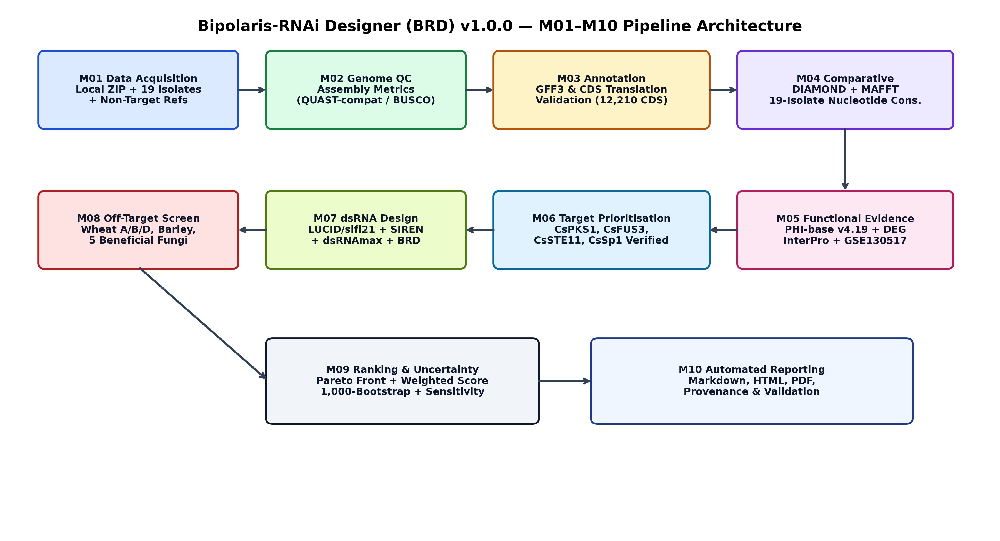
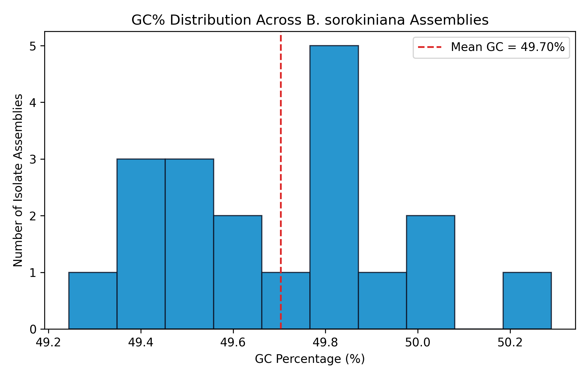
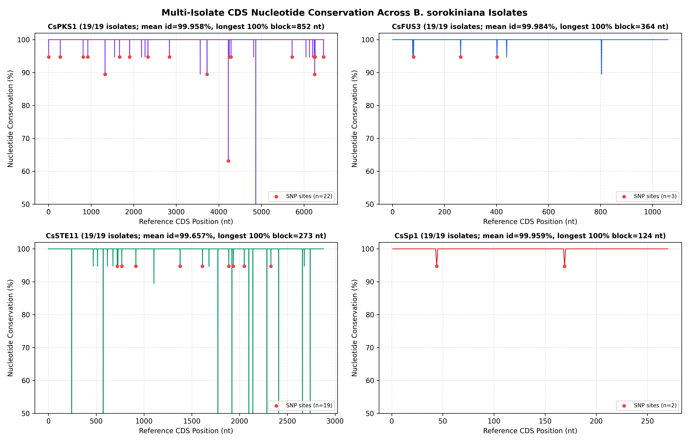
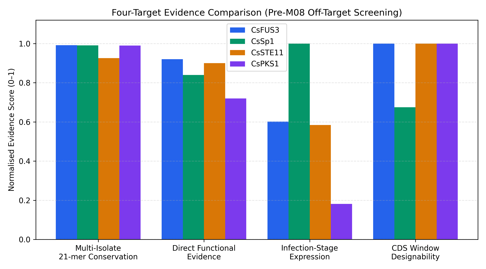
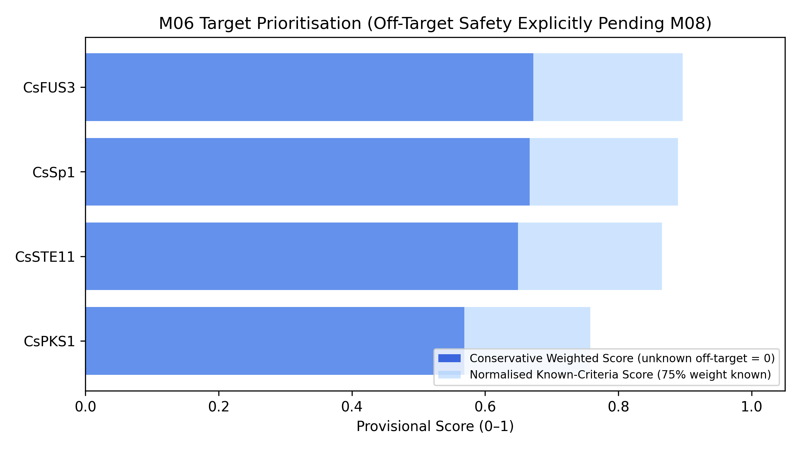
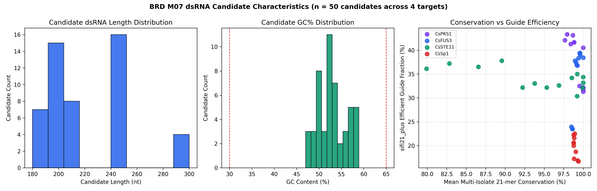
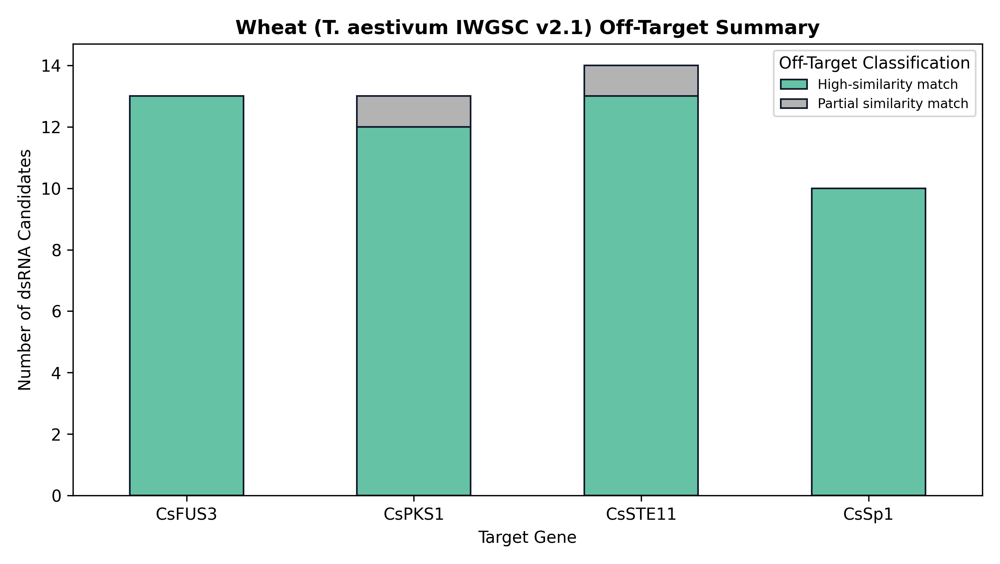
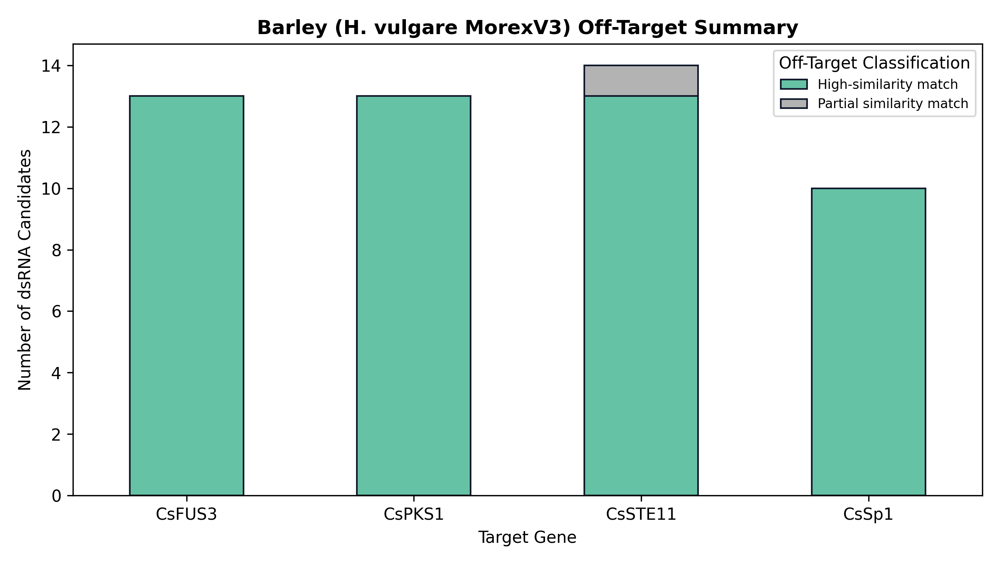
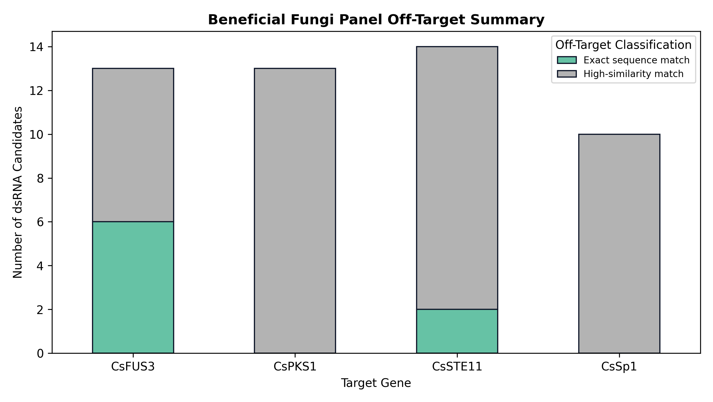
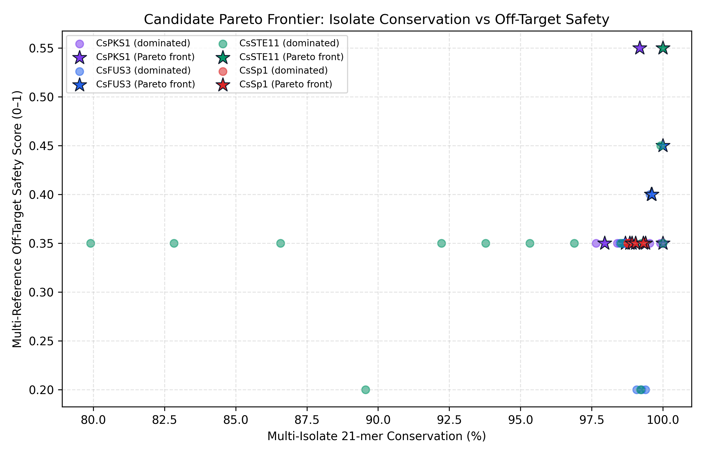
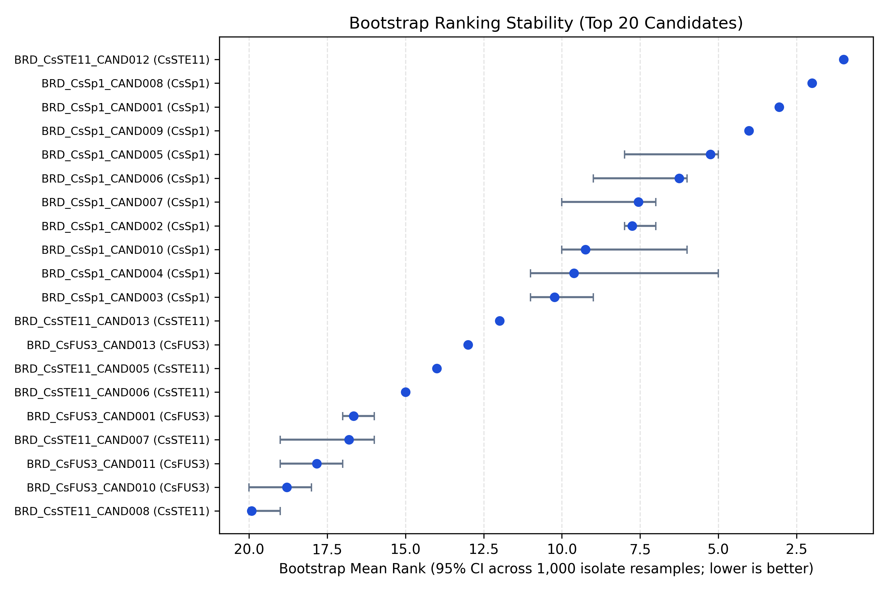
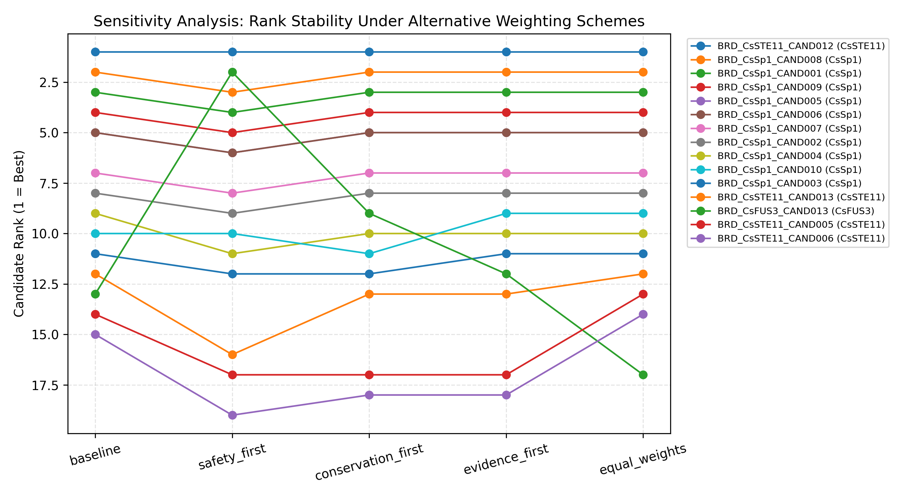
- Al-Sadi, A. M. (2021). *Frontiers in Cellular and Infection Microbiology*, 11, 584899. https://doi.org/10.3389/fcimb.2021.584899
- Appels, R., et al. (2018). *Science*, 361(6403), eaar7191. https://doi.org/10.1126/science.aar7191
- Fletcher, S. J., et al. (2025). dsRNAmax. *NAR Genomics and Bioinformatics*, 7(2), lqaf064. https://doi.org/10.1093/nargab/lqaf064
- Jiménez-Castro, L., et al. (2026). LUCID. *Plant Biotechnology Journal*, 24(6), 3597–3615. https://doi.org/10.1111/pbi.70526
- Koch, A., et al. (2016). *PLOS Pathogens*, 12(10), e1005901. https://doi.org/10.1371/journal.ppat.1005901
- Leng, Y., et al. (2011). *Molecular Plant Pathology*, 12(3), 289–298. https://doi.org/10.1111/j.1364-3703.2010.00666.x
- Leng, Y., & Zhong, S. (2015). *PLOS ONE*, 10(5), e0128291. https://doi.org/10.1371/journal.pone.0128291
- Leng, Y., et al. (2024). *PhytoFrontiers*, 4(4), 247–250. https://doi.org/10.1094/PHYTOFR-08-23-0108-A
- Piombo, E., et al. (2021). *Microbiology Spectrum*, 9(2), e0109921. https://doi.org/10.1128/Spectrum.01099-21
- Qiao, L., et al. (2021). *Plant Biotechnology Journal*, 19(9), 1756–1768. https://doi.org/10.1111/pbi.13589
- Roy, C., et al. (2023). *Frontiers in Plant Science*, 14, 1098648. https://doi.org/10.3389/fpls.2023.1098648
- Urban, M., et al. (2022). PHI-base. *Nucleic Acids Research*, 50(D1), D837–D847. https://doi.org/10.1093/nar/gkab1037
- Vargas Mejía, P., & Vega-Arreguín, J. C. (2025/2026). SIREN. https://doi.org/10.1101/2025.05.26.656188
- Zhang, W., et al. (2022). CsSp1. *Molecular Plant Pathology*, 23(2), 218–236. https://doi.org/10.1111/mpp.13155
- Zhang, W., et al. (2023). LK93 genome. *MPMI*, 36(7), 452–456. https://doi.org/10.1094/MPMI-09-22-0196-A
| software | version | repository_or_source | license | execution_status |
|---|---|---|---|---|
| Python | 3.13.14 | https://www.python.org/ | PSF | Native Windows 11 |
| Biopython | 1.86 | https://biopython.org/ | Biopython | Native Windows 11 |
| ViennaRNA (Python RNA) | 2.8.0 | https://www.tbi.univie.ac.at/RNA/ | ViennaRNA | Native Windows 11 |
| Snakemake | 9.27.1 | https://snakemake.readthedocs.io/ | MIT | Native Windows 11 |
| pandas | 2.3.3 | https://pandas.pydata.org/ | BSD-3-Clause | Native Windows 11 |
| NumPy | 2.4.0 | https://numpy.org/ | BSD-3-Clause | Native Windows 11 |
| SciPy | 1.16.3 | https://scipy.org/ | BSD-3-Clause | Native Windows 11 |
| Matplotlib | 3.10.8 | https://matplotlib.org/ | PSF-based | Native Windows 11 |
| primer3-py | 2.4.0 | https://github.com/libnano/primer3-py | GPL-2.0 | Native Windows 11 |
| reportlab | 4.4.7 | https://www.reportlab.com/ | BSD | Native Windows 11 |
| PyYAML | 6.0.3 | https://pyyaml.org/ | MIT | Native Windows 11 |
| NCBI BLAST+ | blastn: 2.17.0+ | Package: blast 2.17.0, build Jul 1 2025 08:57:20 | https://blast.ncbi.nlm.nih.gov/ | Public Domain | Native Windows 11 |
| NCBI Datasets CLI | datasets version: 18.41.0 | https://www.ncbi.nlm.nih.gov/datasets/ | Public Domain | Native Windows 11 |
| DIAMOND | diamond version 2.2.8 | https://github.com/bbuchfink/diamond | GPL-3.0 | Native Windows 11 |
| MAFFT | Preparing environment to run MAFFT on Windows. | This may take a while, if real-time scanning by ant | https://mafft.cbrc.jp/alignment/software/ | BSD-3-Clause | Native Windows 11 |
| dsRNAmax | 2026/11/11 05:41:33 dsRNAmax - dsRNA maximizer (Version: 1.1.14) | -biasHeader string | https://github.com/sfletc/dsRNAmax | BSD-3-Clause | Native Windows 11 (commit 674b5b5) |
| SIREN (siren-rnai) | 0.1.6 (commit 0f5a5a9) | https://github.com/pablovargasmejia/SIREN | GPL-3.0 | Native Windows Python modules (prefilter + designVIII); RNAhybrid replaced by ViennaRNA duplexfold |
| LUCID (sifi21_plus) | 0.1.0 (commit 37910bd) | https://github.com/Brunxi/LUCID | No explicit LICENSE file in repo | sifi21_plus free-energy/efficiency reproduced natively with ViennaRNA 2.8.0 |
| tensorflow/lucid | v0.3.10 (rejected) | https://github.com/tensorflow/lucid | Apache-2.0 | EXCLUDED — neural network interpretability library, not RNAi design |
| evanpeikon/BLAST | unreleased (rejected) | https://github.com/evanpeikon/BLAST | MIT | EXCLUDED — educational script; official NCBI BLAST+ 2.17.0+ used |
| metashot/busco | 1.0.0 (rejected) | https://github.com/metashot/busco | GPL-3.0 | EXCLUDED — deprecated Nextflow wrapper |
| QUAST | 5.3.0 (not installed) | https://github.com/ablab/quast | GPL-2.0 | Linux-only (WSL2 distro absent); Python QUAST-compatible metrics computed |
| BUSCO | 6.1.0 (not installed) | https://busco.ezlab.org/ | MIT | Linux-only (WSL2 distro absent); scores marked NA (not fabricated) |
| OrthoFinder | 3.2 (not installed) | https://github.com/OrthoFinder/OrthoFinder | GPL-3.0 | Linux MCL/FastME unavailable natively; DIAMOND RBH graph clustering executed |
| Funannotate / BRAKER3 | 1.9.1 / 3.0.8 (not installed) | https://github.com/nextgenusfs/funannotate | BSD-2 / Artistic | Linux-only; NCBI RefSeq/GenBank annotations reused + tblastn/blastn exon alignment |
| RNAhybrid | 2.1.2 (not installed) | https://bibiserv.cebitec.uni-bielefeld.de/rnahybrid | GPL-2.0 | Linux/macOS Bioconda only; ViennaRNA 2.8.0 RNA.duplexfold executed |